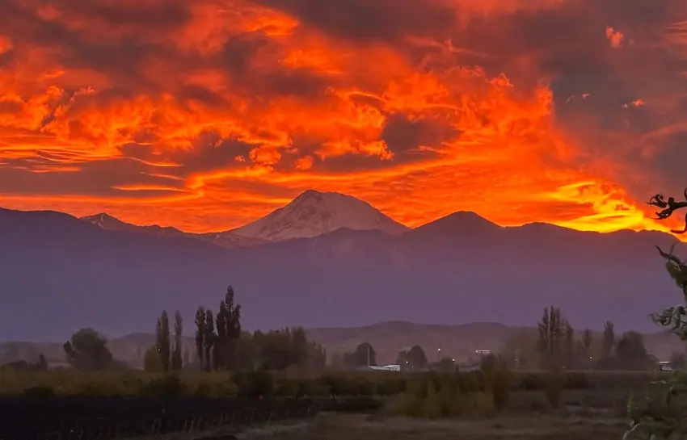

Valle De Uco, Mendoza
Boutique Winery Rated One of the Best Wines in the World!: $US1.5 Million
Spectacular Andes Views!

Die vollständige Beschreibung dieses Objekts liegt noch auf Englisch vor. Wir übersetzen sie eine nach der anderen. Fragen Sie Byron in der Zwischenzeit über WhatsApp oder E-Mail — er erzählt Ihnen alles auf Deutsch.
This modern boutique winery and vineyard with exports to Europe and earned accolades by one respected wine reviewer as producing some of the best wines in the world in the top wine grape-producing area of Mendoza.